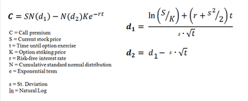

Options are derivative contracts that give the holder the right, but not the obligation, to buy or sell the underlying instrument at a specified price on or before a specified future date. Although the holder (also called the buyer) of the option is not obligated to exercise the option, the option writer (known as the seller) has an obligation to buy or sell the underlying instrument if the option is exercised.
Depending on the strategy, option trading can provide a variety of benefits including the security of limited risk and the advantage of leverage. Options can protect or enhance an investor's portfolio in rising, falling and neutral markets. Regardless of the reasons for trading options or the strategy employed, it is important to understand the factors that determine the value of an option. This tutorial will explore the factors that influence option pricing, as well as several popular option pricing models that are used to determine the theoretical value of options.
The following is intended as a review of basic option terminology, which can be used as a reference as needed:
American Options - An option that can be at any point during the life of the contract. Most exchange-traded options are American.
At-the-Money - An option whose strike price is equal to the market price of the underlying security.
Call - An option that gives the holder the right to buy the underlying security at a particular price for a specified, fixed period of time.
Contract - An option that represents 100 shares of an underlying stock.
Covered Call - An option strategy in which the writer of a call option holds a long position in the underlying security on a share-for-share basis.
Covered Put - An option in which the writer of a put option holds a short position in the underlying security on a share-for-share basis.
Covered Writer - An option seller who owns the option's underlying security as a hedge against the option.
Derivative - An investment product that derives its value from an underlying asset. Options are derivatives.
Early Exercise - The exercise of an option before its expiration date. Early exercise can occur with American-style options.
European Options - An option that can only be exercised during a particular time period just before its expiration.
Date - The date that an option becomes void. For listed stock options, it is the Saturday following the third Friday of the expiration month.
Holder - An investor who purchases an option and who makes a premium payment to the writer.
In-the-Money - An option that has an intrinsic value. A call option is considered in-the-money if the underlying security is higher than the strike price.
LEAPS (Long-term Equity Anticipation Securities) - LEAPS are publicly traded options that have expiration dates longer than one year.
Listed Option - A put or call option that is traded on an options exchange. The terms of the option, including strike price and expiration dates, are standardized by the exchange.
Naked Option - An option position in which the writer of the option does not have an offsetting position in the underlying security, thereby having no protection against adverse prices moves.
Open Interest - The total number of outstanding option contracts in the exchange market on a particular day.
Option - A financial derivative that gives the holder the right, but not the obligation, to either buy or sell a fixed amount of a security or other financial asset at an agreed-upon price (the strike price) on or before a specified date.
Out-of-the-Money - An option with no intrinsic value that would be worthless if it expired on that day. A call option is out-of-the-money when the strike price is higher than the market price of the underlying security. A put option is out-of-the-money when the strike price is lower than the market price of the underlying security.
Over-the-Counter - An option that is not traded over an exchange. An over-the-counter option is not subjected to the standardization of terms such as strike prices and expiration dates.
Premium - The total cost of the option. An option holder pays a premium to the option writer in exchange for the right, but not the obligation, to exercise the option. In general, the option's premium is its intrinsic value combined with its time value.
Put - An option that gives the holder the right to sell the underlying security at a particular price for a specified, fixed period of time.
Strike Price - The agreed-upon price at which an option can be exercised. The strike price for a call option is the price at which the security can be bought (prior to the expiration date); the strike price for a put option is the price at which the security can be sold (before the expiration date). The strike price is sometimes called the exercise price.
Terms - The collective conditions of an options contract that denote the strike price, expiration date and the underlying security.
Underlying Security - The security that is subject to being bought or sold upon the exercise of an option.
Writer - An investor who sells an option and who collects the premium payment from the buyer. Writers are obligated to buy or sell if the holder chooses to exercise the option.
The price, or cost, of an option is an amount of money known as the premium. The buyer pays this premium to the seller in exchange for the right granted by the option. For example, a buyer might pay a seller for the right to purchase 100 shares of stock XYZ at a strike price of $60 on or before December 22. If the position becomes profitable, the buyer will decide to exercise the option; if it does not become profitable, the buyer will let the option expire worthless. The buyer pays the premium so that he or she has the "option" or the choice to exercise or allow the option to expire worthless.
Premiums are priced per share. For example, the premium on an IBM option with a strike price of $205 might be quoted as $5.50, as shown in Figure 1. Since equity option contracts are based on 100 stock shares, this particular contract would cost the buyer $5.50 X 100, or $550 dollars. The buyer pays the premium whether or not the option is exercised and the premium is non-refundable. The seller gets to keep the premium whether or not the option is exercised.
| Figure 1 This option chain for the October 2012 IBM contract shows the various premiums and strike prices. Chart created at CBOE.com. |
An option premium is its cost - how much the particular option is worth to the buyer and seller. While supply and demand ultimately determine price, other factors, which will be discussed in this tutorial, do play a role. Option traders apply these factors to mathematical models to help determine what an option should be worth.
The two components of an option premium are the intrinsic value and the time value. The intrinsic value is the difference between the underlying's price and the strike price. Specifically, the intrinsic value for a call option is equal to the underlying price minus the strike price; for a put option, the intrinsic value is the strike price minus the underlying price
| Intrinsic Value (Call) = Underlying Price – Strike Price |
| Intrinsic Value (Put) = Strike Price – Underlying Price |
By definition, the only options that have intrinsic value are those that are in-the-money. For calls, in-the-money refers to options where the exercise (or strike) price is less than the current underlying price. A put option is in-the-money if its strike price is greater than the current underlying price.
| In-the-Money (Call) = Strike Price < Underlying Price |
| In-the-Money (Put) = Strike Price > Underlying Price |
Any premium that is in excess of the option's intrinsic value is referred to as time value. For example, assume a call option has a total premium of $9.00 (this means that the buyer pays, and the seller receives, $9.00 for each share of stock or $900 for the contract, which is equal to 100 shares). If the option has an intrinsic value of $7.00, its time value would be $2.00 ($9.00 - $7.00 = $2.00).
| Time Value = Premium – Intrinsic Value |
In general, the more time to expiration, the greater the time value of the option. It represents the amount of time that the option position has to become more profitable due to a favorable move in the underlying price. In general, investors are willing to pay a higher premium for more time (assuming the different options have the same exercise price), since time increases the likelihood that the position can become profitable. Time value decreases over time and decays to zero at expiration. This phenomenon is known as time decay.
An option premium, therefore, is equal to its intrinsic value plus its time value.
| Option Premium = Intrinsic Value + Time Value |
There are six primary factors that influence option prices, as shown in Figure 2 and discussed below.
Underlying Price
The most influential factor on an option premium is the current market price of the underlying asset. In general, as the price of the underlying increases, call prices increase and put prices decrease. Conversely, as the price of the underlying decreases, call prices decrease and put prices increase.
| If underlying prices ... | Call prices will ... | Put prices will ... |
| Increase | Increase | Decrease |
| Decrease | Decrease | Increase |
Expected Volatility
Volatility is the degree to which price moves, regardless of direction. It is a measure of the speed and magnitude of the underlying's price changes. Historical volatility refers to the actual price changes that have been observed over a specified time period. Option traders can evaluate historical volatility to determine possible volatility in the future. Implied volatility, on the other hand, is a forecast of future volatility and acts as an indicator of the current market sentiment. While implied volatility is often difficult to quantify, option premiums will generally be higher if the underlying exhibits higher volatility, because it will have higher expected price fluctuations.
| The greater the expected volatility, the higher the option value |
Strike Price
The strike price determines if the option has any intrinsic value. Remember, intrinsic value is the difference between the strike price of the option and the current price of the underlying. The premium typically increases as the option becomes further in-the-money (where the strike price becomes more favorable in relation to the current underlying price). The premium generally decreases as the option becomes more out-of-the-money (when the strike price is less favorable in relation to the underlying).
| Premiums increase as options become further in-the-money |
Time Until Expiration
The longer an option has until expiration, the greater the chance that it will end up in-the-money, or profitable. As expiration approaches, the option's time value decreases. In general, an option loses one-third of its time value during the first half of its life and two-thirds of its value during the second half. The underlying's volatility is a factor in time value; if the underlying is highly volatile, one could reasonably expect a greater degree of price movement before expiration. The opposite holds true where the underlying typically exhibits low volatility; the time value will be lower if the underlying price is not expected to move much.
| The longer the time until expiration, the higher the option price |
| The shorter the time until expiration, the lower the option price |
Interest Rate and Dividends
Interest rates and dividends also have small, but measurable, effects on option prices. In general, as interest rates rise, call premiums will increase and put premiums will decrease. This is because of the costs associated with owning the underlying; the purchase will incur either interest expense (if the money is borrowed) or lost interest income (if existing funds are used to purchase the shares). In either case, the buyer will have interest costs.
| If interest rates ... | Call prices will ... | Put prices will ... |
| Rise | Increase | Decrease |
| Fall | Decrease | Increase |
Dividends can affect option prices because the underlying stock's price typically drops by the amount of any cash dividend on the ex-dividend date. As a result, if the underlying's dividend increases, call prices will decrease and put prices will increase. Conversely, if the underlying's dividend decreases, call prices will increase and put prices will decrease.
| If dividends ... | Call prices will ... | Put prices will ... |
| Rise | Decrease | Increase |
| Fall | Increase | Decrease |
It is important to differentiate between an option premium and its theoretical value. As discussed previously, the option premium is the price the option buyer pays to the seller in order to have the right granted by the option, and it is the money the seller receives in exchange for writing the option.
The theoretical value of an option, on the other hand, is the estimated value of an option – a price generated by means of a model. It is what an option should currently be worth using all the known inputs, such as the underlying price, strike and days until expiration. These factors often change during an option's lifetime, and some fluctuate in value on a continuing basis throughout any trading session.
A pricing model will create theoretical values, but they are just that – theoretical. Specific values for each factor can be used to predict an option contract's theoretical value at a given point in the future.
When options are first listed on a stock, for example, the market makers will not know what sort of implied volatility to use, so they must make educated guesses (theoretical values). The implied volatility will then change based upon the supply and demand for the options.
Option traders utilize various option price models to attempt to set a current theoretical value. Models use certain fixed knowns in the present – factors such as underlying price, strike and days till expiration – along with forecasts (or assumptions) for factors like implied volatility, to compute the theoretical value for a specific option at a certain point in time. Variables will fluctuate over the life of the option, and the option position's theoretical value will adapt to reflect these changes.
Most professional traders and investors who trade significant option positions rely on theoretical value updates to monitor the changing risk and value of option positions and to assist with trading decisions. Many options trading platforms provide up-to-the-minute option price modeling values, and option pricing calculators can be found online at various Web sites, including the Options Industry Council (http://www.optioneducation.net/calculator/main_calculator.asp). This particular calculator allows users to select by model/exercise type, as shown in Figure 3.
The Black-Scholes model for calculating the premium of an option was introduced in 1973 in a paper entitled, "The Pricing of Options and Corporate Liabilities" published in the Journal of Political Economy. The formula, developed by three economists – Fischer Black, Myron Scholes and Robert Merton – is perhaps the world's most well-known options pricing model. Black passed away two years before Scholes and Merton were awarded the 1997 Nobel Prize in Economics for their work in finding a new method to determine the value of derivatives (the Nobel Prize is not given posthumously; however, the Nobel committee acknowledged Black's role in the Black-Scholes model).
The Black-Scholes model is used to calculate the theoretical price of European put and call options, ignoring any dividends paid during the option's lifetime. While the original Black-Scholes model did not take into consideration the effects of dividends paid during the life of the option, the model can be adapted to account for dividends by determining the ex-dividend date value of the underlying stock.
The model makes certain assumptions, including:
The formula, shown in Figure 4, takes the following variables into consideration:
|  |
| Figure 4: The Black-Scholes pricing formula for call options. |
The model is essentially divided into two parts: the first part, SN(d1), multiplies the price by the change in the call premium in relation to a change in the underlying price. This part of the formula shows the expected benefit of purchasing the underlying outright. The second part, N(d2)Ke^(-rt), provides the current value of paying the exercise price upon expiration (remember, the Black-Scholes model applies to European options that are exercisable only on expiration day). The value of the option is calculated by taking the difference between the two parts, as shown in the equation.
The mathematics involved in the formula is complicated and can be intimidating. Fortunately, however, traders and investors do not need to know or even understand the math to apply Black-Scholes modeling in their own strategies. As mentioned previously, options traders have access to a variety of online options calculators and many of today's trading platforms boast robust options analysis tools, including indicators and spreadsheets that perform the calculations and output the options pricing values. An example of an online Black-Scholes calculator is shown in Figure 5; the user must input all five variables (strike price, stock price, time (days), volatility and risk free interest rate).
The Cox-Rubenstein (or Cox-Ross-Rubenstein) binomial option pricing model is a variation of the original Black-Scholes option pricing model. It was first proposed in 1979 by financial economists/engineers John Carrington Cox, Stephen Ross and Mark Edward Rubenstein. The model is popular because it considers the underlying instrument over a period of time, instead of just at one point in time, by using a lattice based model.
A lattice model takes into account expected changes in various parameters over an option's life, thereby producing a more accurate estimate of option prices than created by models that consider only one point in time. Because of this, the Cox-Ross-Rubenstein model is especially useful for analyzing American style options, which can be exercised at any time up to expiration (European style options can only be exercised upon expiration).
The Cox-Ross-Rubenstein model uses a risk-neutral valuation method. Its underlying principal purports that when determining option prices, it can be assumed that the world is risk neutral and that all individuals (and investors) are indifferent to risk. In a risk neutral environment, expected returns are equal to the risk-free rate of interest.
The Cox-Ross-Rubenstein model makes certain assumptions, including:
The Cox-Ross-Rubenstein model is a two-state (or two-step) model in that it assumes the underlying price can only either increase (up) or decrease (down) with time until expiration. Valuation begins at each of the final nodes (at expiration) and iterations are performed backwards through the binomial tree up to the first node (date of valuation). In very basic terms, the model involves three steps:
| Figure 6: The Cox-Ross-Rubenstein model applied to an American-style options contract, using the Options Industry Council\'s online pricing calculator. |
Put/call parity is an options pricing concept first identified by economist Hans Stoll in his 1969 paper "The Relation Between Put and Call Prices." It defines the relationship that must exist between European put and call options with the same expiration and strike price (it does not apply to American style options because they can be exercised any time up to expiration). The principal states that the value of a call option, at one strike price, implies a fair value for the corresponding put and vice versa. The relationship arises from the fact that combinations of options can create positions that are identical to holding the underlying itself (a stock, for example). The option and stock positions must have the same return or an arbitrage opportunity would arise. Arbitrageurs would be able to make profitable trades, free of risk, until put/call parity returned.
Arbitrage is the opportunity to profit from price variances on one security in different markets. For example, arbitrage would exist if an investor could buy stock ABC in one market for $45 while simultaneously selling stock ABC in a different market for $50. The synchronized trades would offer the opportunity to profit with little to no risk.
Put options, call options and the underlying stock are related in that the combination of any two yields the same profit/loss profile as the remaining component. For example, to replicate the gain/loss features of a long stock position, an investor could simultaneously hold a long call and a short put (the call and put would have the same strike price and same expiration). Similarly, a short stock position could be replicated with a short call plus a long put and so on. If put/call parity did not exist, investors would be able to take advantage of arbitrage opportunities.
Options traders use put/call parity as a simple test for their European style options pricing models. If a pricing model results in put and call prices that do not satisfy put/call parity, it implies that an arbitrage opportunity exists and, in general, should be rejected as an unsound strategy.
There are several formulas to express put/call parity for European options. The following formula provides an example of a formula that can be used for non-dividend paying securities:
| c= S + p – Xe – r(T-t)
p = c – S + Xe – r(T-t) |
| Where
c = call value
S = current stock price p = put price X = exercise price e = Euler\'s constant (exponential function on a financial calculator equal to approximately 2.71828 r = continuously compounded risk free rate of interest T = Expiration date t = Current value date |
Many trading platforms that offer options analysis provide visual representations of put/call parity. Figure 7 shows an example of the relationship between a long stock/long put position (shown in red) and a long call (in blue) with the same expiration and strike price. The difference in the lines is the result of the assumed dividend that would be paid during the option's life. If no dividend was assumed, the lines would overlap.
| Figure 7 An example of a put/call parity chart created with an analysis platform. |
A profit and loss diagram, or risk graph, is a visual representation of the possible profit and loss of an option strategy at a given point in time. Option traders use profit and loss diagrams to evaluate how a strategy may perform over a range of prices, thereby gaining an understanding of potential outcomes. Because of the visual nature of a diagram, traders can evaluate the potential profit and loss, and the risk and reward of the position, at a glance.
To create a profit and loss diagram, values are plotted along X and Y axes. The horizontal axis (the x-axis) shows the underlying prices, labeled in order with lower prices on the left and rising prices towards the right. The current underlying price is usually centered along this axis. The vertical axis (the y-axis) represents the potential profit and loss values for the position. The breakeven point (that indicates no profit and no loss) is usually centered on the y-axis, with profits shown above this point (higher along the y-axis) and losses below this point (lower on the axis). Figure 8 shows the basic structure of a profit and loss diagram.
| Figure 8: The basic structure of a profit and loss diagram. Any value plotted above the x-axis would represent a gain; any value plotted below would indicate a loss. |
The graph line represents the potential profit and loss across the range of underlying prices. For simplicity, we'll begin by taking a look at a long stock position of 100 shares. Assume an investor has bought 100 shares of stock for $25 each, or a total cost of $2,500. The diagram in Figure 9 shows the potential profit and loss for this position. When the graph line is on $25 (the cost per share), note that the profit and loss value is $0.00 (breakeven). As the stock price moves higher, so does the profit; conversely, as the price moves lower, the losses increase. The figure shows the position breaks even at $25 (our purchase price) and as the stock's price increases (moving right along the x-axis) the profits correspondingly increase. Since there is, in theory, no upper limit to the stock's price, the graph line shows an arrow on one end.
| Figure 9: A profit and loss diagram for a hypothetical stock (this does not factor in any commissions or brokerage fees). |
With options, the diagram will look a bit different since our downside risk is limited to the premium that was paid for option. In this example, shown in Figure 10, a call option has a strike price of $50 and a $200 cost (for the contract). The downside risk is $200 - the premium paid. If the option expires worthless (for example, the stock price was $50 at expiration), the loss would be $200, as shown by the graph line interested the y-axis at a value of negative 200. The breakeven point would be a stock price of $52 at expiration; here, the investor has "lost" $200 by paying the premium and the stock's rising price is equal to a $200 gain, canceling out the premium. In this example, every $1 increase in the stock's price at expiration is equal to a $1 gain. For example, if the stock price rises to $54, it would represent a $200 profit.
| Figure 10: A profit and loss diagram for a long option position. |
It should be noted that the above example shows a typical graph line for a long call; each option strategy - such as long call butterflies and short straddles - has a "signature" profit and loss diagram that characterized the profit and loss potential for that particular strategy. Figure 11, taken from the Options Industry Council's Web site, shows various options strategies and the corresponding profit and loss diagrams.
| Figure 11: Various profit and loss diagrams for different options strategies. Image is from the Options Industry Council Web site. |
Most options trading platforms and analysis software allow traders to create profit and loss diagrams for specified options. In addition, the charts can be created by hand, by using spreadsheet software such as Microsoft Excel, or by purchasing commercially available analysis tools.
Many option traders rely on the "Greeks" to evaluate option positions. The Greeks are a collection of statistical values that measure the risk involved in an options contract in relation to certain underlying variables. Popular Greeks include Delta, Vega, Gamma and Theta.
Δ Delta - Sensitivity to Underlying's Price
Delta, the most popular options Greek, measures an option's price sensitivity relative to changes in the price of the underlying, and is the number of points that an option's price is expected to move for each one point change in the underlying. Delta is important because it provides an indication of how the option's value will change with respect to price fluctuations in the underlying instrument, assuming all other variables remain the same.
Delta is typically shown as a numerical value between 0.0 and 1.0 for call options and 0.0 and -1.0 for put options. In other words, option delta will always be positive for calls and negative for puts. It should be noted that delta values can also be represented as whole numbers between 0.0 and 100 for call options and 0.0 to -100 for put options, rather than using decimals. Call options that are out-of-the-money will have delta values approaching 0.0; in-the-money call options will have delta values that are close to 1.0.
ν Vega - Sensitivity to Underlying's Volatility
Vega measures an option's sensitivity to changes in the volatility of the underlying. Vega represents the amount that an option's price changes in response to a 1% change in volatility of the underlying market. The more time that there is until expiration, the more impact increased volatility will have on the option's price.
Because increased volatility implies that the underlying instrument is more likely to experience extreme values, a rise in volatility will correspondingly increase the value of an option and, conversely, a decrease in volatility will negatively affect the value of the option.
Γ Gamma – Sensitivity to Delta
Gamma measures the sensitivity of delta in response to price changes in the underlying instrument. Gamma indicates how delta will change relative to each one point price change in the underlying. Since delta values change at different rates, gamma is used to measure and analyze delta. Gamma is used to determine how stable an option's delta is; higher gamma values indicate that delta could change dramatically in response to even small movements in the underlying's price.
Gamma increases as options become at-the-money and decrease as options become in- and out-of-the-money. Gamma values are generally smaller the further away from the date of expiration; options with longer expirations are less sensitive to delta changes. As expiration approaches, gamma values are typically larger as delta changes have more impact.
Θ Theta – Sensitivity to Time Decay
Theta measures the time decay of an option - the theoretical dollar amount that an option loses every day as time passes, assuming the price and volatility of the underlying remain the same. Theta increases when options are at-the-money; theta decreases when options are in- and out-of-the money. Long calls and long puts will usually have negative theta; short calls and short puts will have positive theta. By comparison, an instrument's whose value is not eroded by time, such as a stock, would have zero theta.
Trading and analysis platforms, as well as online calculators, can provide options traders with current Greek values for any options contract. Figure 12, for example, shows the Delta, Gamma, Theta, Vega and Rho values for both call and put options. These values will change as other variables, such as strike price, change.
| Figure 12: The Greeks |
{kind=link}
{kind=link}
{kind=link}
{kind=link}
{kind=link}
{kind=link}
{kind=link}
{kind=link}
{kind=link}
{kind=link}
{kind=link}
{kind=link}